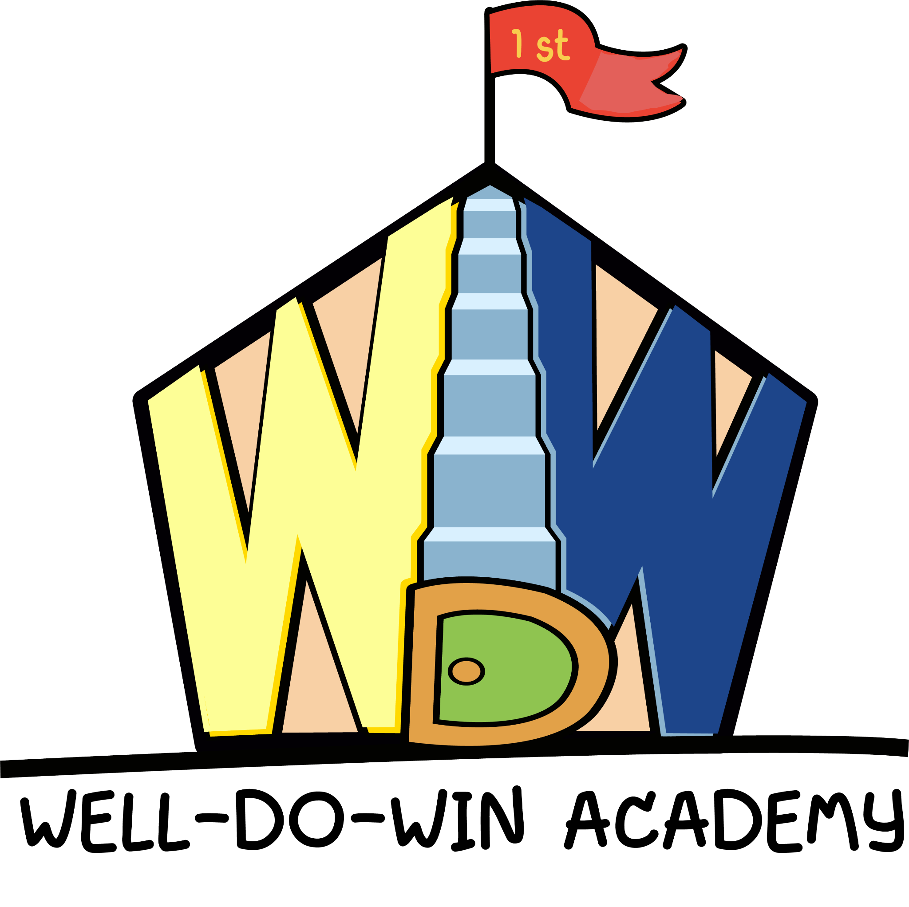

โรงเรียนกวดวิชา เวล-ดู-วิน อคาเดมี่
TPAT3 Mock — ฟิสิกส์ 15 ข้อ • วิทย์-วิศวกรรม 15 ข้อ • ข่าวสาร 10 ข้อ (รวม 60 คะแนน)
ชุดที่ 1
ชุดที่ 2
ชุดที่ 3
สลับลำดับข้อ (ในชุดเดิม)
คะแนนต่อข้อ:
1.5
•
ทำครบ:
0/40
หมายเหตุ: ไฟล์นี้เป็นหน้าเว็บเดียว (HTML) เอาไปวางบน GitHub Pages ได้ทันที • ถ้าโลโก้ไม่ขึ้น ให้เอารูปโลโก้ชื่อ
logo.png
ไว้โฟลเดอร์เดียวกับไฟล์นี้